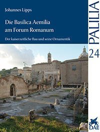

Die kaiserzeitliche Basilica Aemilia – bestehend aus Portikus, Tabernen und einer dahinter gelegenen Basilica – gehört aufgrund ihrer Lage, Größe und Ausstattung zu den bedeutendsten Bauten des antiken Roms. Obwohl gut erhalten und daher von großem wissenschaftlichem Erkenntniswert wurde sie bis heute nicht hinreichend bearbeitet und publiziert. Anhand einer aufgrund der problematischen Quellenlage am Forum Romanum entwickelten Methode zum Umgang mit dislozierten Funden konnte der Großteil der erhaltenen ornamentierten Baugliederfragmente der Basilica Aemilia identifiziert und dokumentiert werden. Um Kurzschlüssen bei der Interpretation vorzubeugen, wurde dabei anhand von Baugliedserien nach sicher, wahrscheinlich oder nur möglicherweise zum Bau gehörigen Stücken unterschieden.
Ziel war, durch die Analyse der technischen Merkmale sowie der Abfolge und Ausführung der Ornamente der einzelnen Bauglieder Aufschluss über die Konstruktion, die Chronologie und den Bauvorgang des Gebäudekomplexes zu gewinnen, um auf dieser Grundlage anschließend Fragen nach Einsatz und Bedeutung des architektonischen Schmucks nachgehen zu können.
Die von einer Mauer umgebene Basilica hatte mindestens zwei Stockwerke mit Säulenstellungen. Das untere Stockwerk war mit einer ionischen, das obere mit einer korinthischen Ordnung ausgestattet. Die zum Forumsplatz gelegene und von einer verkröpften Attika bekrönte Portikus war einstöckig und wies eine hybride Ordnung aus dorischen, tuskanischen und ionischen Elementen auf. Wahrscheinlich zum Bau gehört eine Serie Rankenpfeiler und -kapitelle, die vermutlich entweder einem Pfeilergeschoss zwischen den beiden Stockwerken der Basilica oder einer Pergolaarchitektur auf der Terrasse der Portikus zuzuweisen sind. Die Orientalenstatuen standen wahrscheinlich auf dem verkröpften Gebälk der unteren Ordnung im Mittelschiff der Basilica. Für weitere Architekturfragmente – Pilaster, Clipei und Kassettendecken – ist nicht eindeutig zu klären, ob sie dem Baukomplex angehörten.
Der gesamte im Grundriss auf dem Forum erhaltene Bau wurde in einer einzigen Bauphase in augusteischer Zeit errichtet. Maßgeblich für die Datierung ist eine zwischen 2 v. Chr. und 14 n. Chr. verfasste Inschrift für Lucius Caesar. Die Bauglieder zeichnen sich durch eine große Variationsvielfalt in der Typologie und Ausführung der einzelnen Ornamente aus, die die Grenzen stilistischer Bauornament-Datierungen verdeutlichen. Im fortgeschrittenen 1. Jh. n. Chr. kam es zu einer Auswechslung mehrer Bauglieder – Basen, Säulen, Kapitelle und Architravblöcke – im östlichen Bereich der nördlichen Säulenlängsreihe des unteren Basilicastockwerks. Wahrscheinlich gleichzeitig ersetzte man an der zum Forum gerichteten Portikusfront eine Metope des dorischen Frieses.
Die Wahl und der Anbringungsort der verschiedenen Ornamentbänder war in augusteischer Zeit detailliert geplant und im Rahmen eines verbindlichen Entwurfs den Steinmetzen vorgeschrieben worden. Bei den späteren Baugliedern orientierte man sich an der Ikonographie der augusteischen Stücke.
Die einzelnen Raumeinheiten der Basilica Aemilia wurden bspw. durch den gezielten Einsatz unterschiedlichen Materials oder unterschiedlicher Quantität von Ornamenten in ihrer Repräsentativität voneinander abgesetzt. Die Prachtentfaltung war unter Berücksichtigung der Nutzungsmöglichkeiten des Baues gezielt auf die Besucher ausgerichtet. Das Mittelschiff der Basilica nahm dabei eine herausragende Stellung ein. Bei der Gestaltung der einzelnen Gebäudeteile berücksichtigte man ferner ihre unterschiedliche urbanistischen Situation. Während an der Portikus eine Bogenarchitektur mit altertümlichen Formenelementen begegnet, die sich in den Forumsplatz einbettete, zu dessen Uniformierung beitrug und seine dignitas unterstrich, stellt die Basilica einen in sich geschlossenen Raum dar, der durch den Einsatz aktueller Ornamentformen und innovativer Gestaltungsweisen inszeniert wurde.